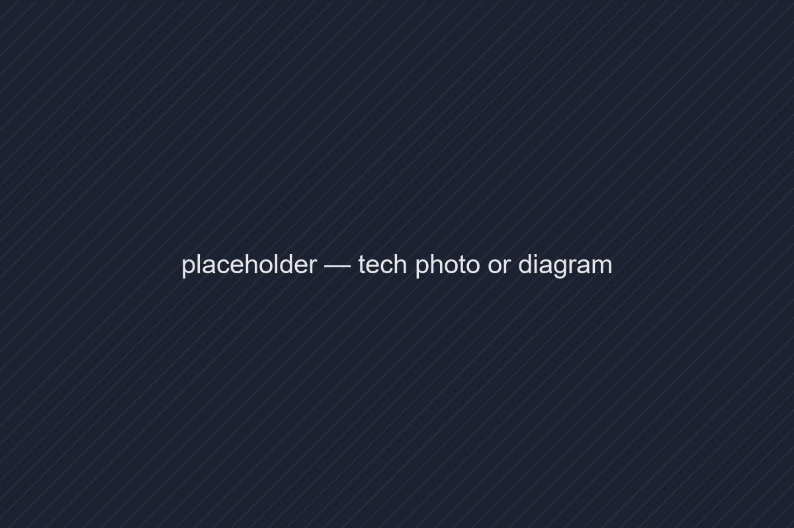

Aaditya Goswami
I build rockets at SkyLakes Aerospace. Here I write about the food I chase, the things I build, and the questions I keep coming back to.
Pinned 01 · featured

What a Water Flow Test Taught Me Before a Metal Print
Before sending an injector off to be printed in metal, I ran water through a resin copy. The numbers disagreed with the CAD, and that disagreement saved a print.
Three notebooks pick one

Food & Places
Street food, restaurant finds, recipes, treks and city guides. Written with a full stomach.
Tech
Programming, tools and engineering notes, from web and AI to rocket hardware on the test stand.
Mind & Meaning
Essays on habits, philosophy and the questions that don't go away.
Latest posts 4 posts
Best Vada Pav Spots in Mumbai
Six stalls, two days, one very full stomach. Ranked by the chutney, the pav, and whether the queue was worth it.
On Doing Less, Better
I cut my to-do list in half for a month. The work that survived was the work that mattered.
What a Water Flow Test Taught Me Before a Metal Print
Before sending an injector off to be printed in metal, I ran water through a resin copy. The numbers disagreed with the CAD, and that disagreement saved a print.
Understanding Vector Databases
What embeddings are, why similarity search needs its own index, and when a plain Postgres table is enough.